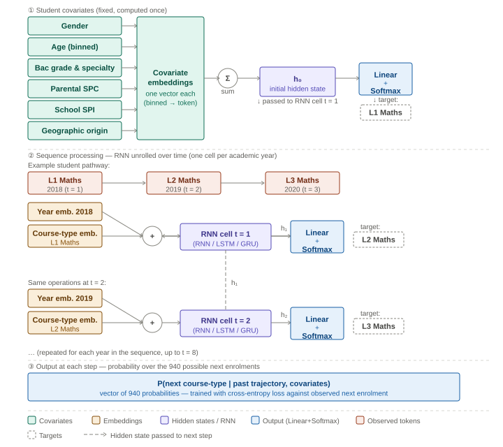
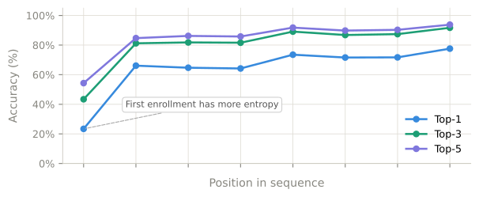
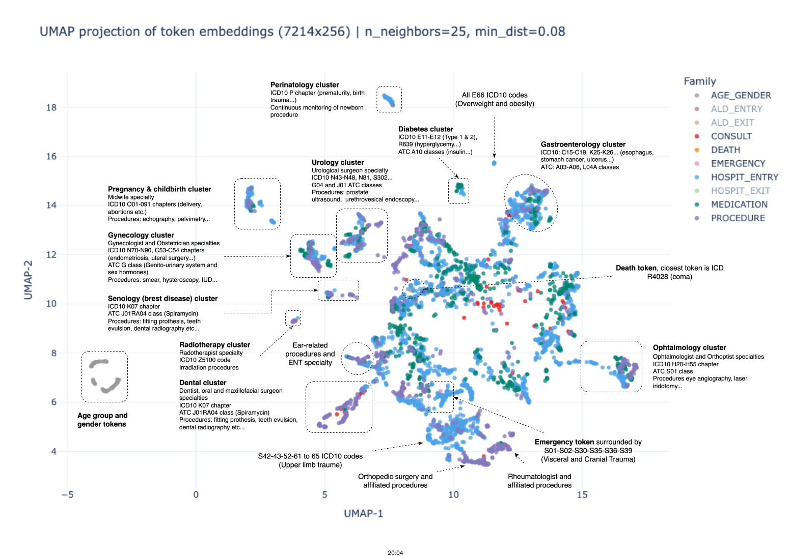

From Panel Data to Token Sequences
NLP-inspired Machine Learning for Longitudinal Categorical Data
Insee
2026-05-12
Agenda
- Why classical methods fall short on administrative trajectories
- The key idea: use language model architectures for sequences of events
- Language models: behind the scenes
- Result I: student enrollment pathways
- Result II: medical care trajectories
- A new analytical infrastructure for NSIs
The Problem
Millions of individual trajectories, one hard problem
Many administrative registers track millions of individual trajectories, in the form of categorical panel data:

Three challenges, all at once
High cardinality Thousands of event types → transition matrices become intractable, feature spaces explode.
Long-range dependence An event at step 1 shapes outcomes at step 10. Markov models cannot capture this.
Irregular timing Events happen at individual-driven intervals. Fixed-period panel models are not designed for this.
Each challenge has been addressed in isolation (D’Haultfoeuille and Iaria 2016; Rust 1988). No existing framework handles all three jointly. Language model architectures can.
The Key Idea
Language models solved those issues for text…
A sentence is a sequence of tokens drawn from a large vocabulary.
Deep-learning language models learn directly from data:
- how tokens relate to one another, via embeddings, without manual feature engineering
- scaling to millions of entries and vocabularies of thousands
- to model long-range dependencies: context from early tokens shapes predictions arbitrarily far ahead
… and categorical panel data resembles text!
| NLP concept | Panel data equivalent |
|---|---|
| Word / Token | Event type (course, medical code…) |
| Sentence | Individual trajectory |
| Vocabulary | Set of all possible event types |
| Next-word prediction | Next-event prediction |
| Sentence embedding | Trajectory summary vector |
Language models: architecture and training
Overview

1 — Token embeddings: discrete → geometry
Every event type is mapped to a dense, learnable vector.

- One-hot encoding gives every event its own independent axis: no notion of similarity.
- Learned embeddings place events that co-occur in trajectories close together, automatically.
2 — From Token Embeddings to Sequence Embeddings
We want to get \(h_c\), a vector summarizing the past up to position \(c\).
RNNs (GRU / LSTM) — rolling memory (Schmidt 2019)

✓ Lightweight, easy to train
✗ but sequential processing implies slowness and vanishing information for long sequences
Transformers — attention over full history (Vaswani et al. 2023)
✓ Perfect long-range memory, Full parallelisation
✗ Needs more data · Slower on very short sequences
Key concept
\(h_c\) is the key component of those models: a dense vector with a controlled dimensionality that summarizes all the information from the past.
3 — Pre-training
Language models are pre-trained on the Next-Token Prediction task — predicting the next event given all previous events.
Why this works so well:
- Requires no labeled data — the sequence itself is the supervision
- Performance scales reliably with more data and compute
- Produces rich, transferable representations encoding transition structure
- It is the dominant pre-training objective for autoregressive models (GPT family, etc.)
To have time-aware models, we add a Time-to-Next-Event task (see (Shmatko et al. 2025)).
Result I — Student Pathways
3 million students, 940 course-types, one GRU
Data
- ~3 million students, baccalauréat cohorts 2017–2022
- ~10 million enrollment records
- Vocabulary: 940 course-types (L1 bachelor → PhD)
- Sequence length: up to 8 (one per academic year)
- Covariates: gender, age, bac grade & specialty, parental SPC, school Social Positioning Index, geographic origin
At this scale and vocabulary size (940 classes), standard regression, ensemble, and boosting methods were not trainable. Sequence models are the only viable option.
Pipeline

Predictive power

| Model | Top-1 Accuracy | Top-3 Accuracy | Top-5 Accuracy | Top-1 Acc. excl. 1st enrol. pred. | Top-3 Acc. excl. 1st enrol. pred. | Top-5 Acc. excl. 1st enrol. pred. |
|---|---|---|---|---|---|---|
| Bigram model | N.A. | N.A. | N.A. | 62.34 % | 79.65 % | 83.86 % |
| RNN (GRU) | 54.01 % | 71.24 % | 77.10 % | 66.65 % | 82.78 % | 86.56 % |
Inertia dominates. Most predictive signal comes from the previous enrollment alone. The GRU’s marginal accuracy gain is modest.
Why the model still matters:
- Covariates: social background, school SPI, … feed into predictions and enable sensitivity analyses (effect of social origin on transition probabilities)
- First enrollment: covariates allow predicting it, unlike the bigram
- Embeddings: hidden states h are reusable trajectory representations for clustering, causal matching, or outcome prediction (dropout, labor market)
Result II — Medical Pathways
The entire French population’s health history
Data — SNDS (National Health Database): 70 million patients covered, 8 billion medical events, 7,204 token vocabulary:
| Event family | Tokens |
|---|---|
| Specialty consultations | 83 |
| Clinical procedures (CCAM) | 936 |
| Medications (ATC) | 704 |
| Hospital diagnoses (ICD-10) | 3 275 |
| Admissions, emergencies, deaths | — |
- Irregular timestamps: multiple events per day possible, or none for months
Model
- Transformer — right fit for large scale + irregular time
- Time-aware: Time2Vec embeddings + Delphi loss
- Jointly predicts at each step:
- Type of the next medical event
- Expected waiting time until it occurs
- Gender and birth year prepended as context
The model discovers the map of medicine — unsupervised

- Clinically coherent clusters form purely from trajectory co-occurrence
- Higher-order structure is preserved: gynecology sits adjacent to senology; emergency neighbors trauma codes
- The model has internalized the logic of care pathways, not merely memorized token pairs
This structured geometry emerges without any supervision: it is entirely a product of learning to predict the next event in 8 billion medical records.
Zero-shot predictions rival supervised models
Task (unseen during training): given a random point in a patient’s trajectory, predict whether a specific event occurs within 30 / 180 / 365 days.
Three approaches compared
- Naïve baseline: logistic regression on age and gender only
- Logistic on embeddings: trained on 100k patients
- Zero-shot: model’s output logits, no additional training at all
Evaluated on 1 million held-out patients.
Average Precision Score — 365-day horizon
| Event | Baseline | Zero-shot | LogReg emb. |
|---|---|---|---|
| Dialysis | 0.004 | 0.82 | 0.85 |
| Chemotherapy | 0.01 | 0.56 | 0.64 |
| Death | 0.20 | 0.46 | 0.63 |
| GP visit | 0.70 | 0.83 | 0.90 |
| Nurse visit | 0.46 | 0.53 | 0.68 |
| Hospitalization | 0.24 | 0.35 | 0.47 |
| Emergency | 0.21 | 0.25 | 0.35 |
| Heart failure | 0.04 | 0.09 | 0.12 |
Zero-shot rivals supervised (100k labels) for most events. History-driven events — dialysis (0.82), chemotherapy (0.56) — show the largest gains from an near-zero baseline. Unpredictable events (emergency, heart failure) remain hard but still improve.
A New Infrastructure for NSIs
More than a predictor — a reusable analytical backbone
What we have shown
✓ Sequence models handle high cardinality, long-range dependence, and irregular timing jointly — no classical method does
✓ Trained on raw administrative data, they learn structured, semantically meaningful representations of individual histories
They are foundational:
✓ These representations transfer to downstream tasks unseen during training, without retraining
✓ The models are generative by construction !
The institutional opportunity
One model, pre-trained on a national register, serves as a shared backbone:
- Policy evaluation and associative studies
- Subgroup characterisation and matching
- Control variables for causal inference
- Synthetic data generation
One model. Many research questions. Lower barrier to entry for research teams.
Governance is not optional.
- Documented training data & versioning
- Full auditability of model decisions
- Strict access controls on individual-level embeddings
- Same standards apply to any generated synthetic data
Thank You
References